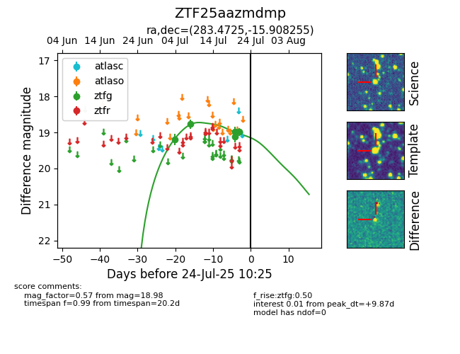

Target ZTF25aazmdmp at 2025-07-24 10:25, see:
FINK: fink-portal.org/ZTF25aazmdmp
Lasair: lasair-ztf.lsst.ac.uk/objects/ZTF25aazmdmp
ALeRCE: alerce.online/object/ZTF25aazmdmp
alt names
ZTF25aazmdmp (ztf,fink)
coordinates:
equatorial (ra, dec) = (283.4725,-15.90826)
galactic (l, b) = (18.9607,-7.70897)
photometry
last ztfg=18.98
5 ztfg detections
